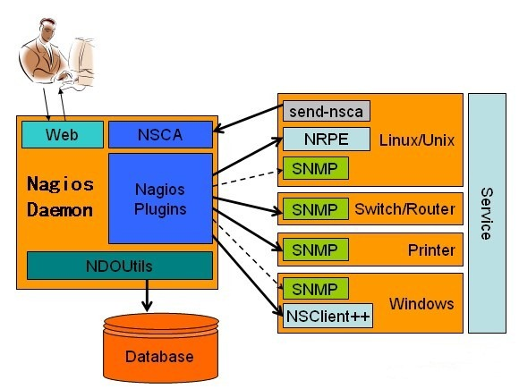

监控系统
Zenoss
Zenoss Core是开源企业级IT管理软件-是智能监控软件，他允许IT管理员依靠单一的WEB控制台来监控网络架构的状态和健康度。Zenoss Core同时也是开源的网络与系统管理软件。
Cacti

Nagios


- nagios配置记录
- Naigos设置smtp方式告警
- Nagios官方网站: http://www.nagios.org/
- Nagios中文项目:
- Linux下Nagios的安装与配置(原理,安装,配置,NRPE,NSclient++): http://www.cnblogs.com/mchina/archive/2013/02/20/2883404.html
- nagios安装与配置脚本: http://blog.linuxeye.com/46.html
- CentOS 6.4安装Nagios(中文版): http://www.linuxidc.com/Linux/2013-08/88419p2.htm
- Nginx环境下构建Nagios监控平台: http://www.linuxidc.com/Linux/2011-07/38112.htm
- Nagios与NConf整合与使用: http://www.linuxidc.com/Linux/2014-02/96086.htm
- Nginx环境下构建Nagios监控平台: http://www.linuxidc.com/Linux/2011-07/38112.htm
- Nagios搭建与配置详解: http://www.linuxidc.com/Linux/2013-05/84848.htm
- CentOS中Nagios用第三方SMTP邮件服务实现告警: http://freman.blog.51cto.com/1309295/1216126
- Nagios 监控系统架设全攻略: http://www.ibm.com/developerworks/cn/linux/1309_luojun_nagios/index.html
-
Nagios性能分析图表的实现
- http://docs.pnp4nagios.org/pnp-0.6/start
- http://huangrs.blog.51cto.com/2677571/1050614
- http://www.ithov.com/linux/129729.shtml
- Nagios图形化界面之三(nagiosgraph): http://wushank.blog.51cto.com/3489095/1294969
- Nagios图形化界面之二(pnp4nagios): http://wushank.blog.51cto.com/3489095/1294784
- Nagios的配置攻略: http://www.ithov.com/linux/129727.shtml
- Ganglia 和 Nagios，第 2 部分: 使用 Nagios 监视企业集群: http://www.ibm.com/developerworks/cn/linux/l-ganglia-nagios-2/index.html
- Nagios MAP问题:http://bbs.chinaunix.net/forum.php?mod=viewthread&tid=1934591
Nagios是一个监视系统运行状态和网络信息的监视系统。Nagios能监视所指定的本地或远程主机以及服务，同时提供异常通知功能等
Nagios可运行在Linux/Unix平台之上，同时提供一个可选的基于浏览器的WEB界面以方便系统管理人员查看网络状态，各种系统问题，以及日志等等。
Nagios 有一个 Windows 下的客户端NSClient++：http://www.oschina.net/p/nsclientpp
Nagios的主要功能特点：
- 监视网络服务 (SMTP, POP3, HTTP, NNTP, PING等)
- 监视主机资源 (进程, 磁盘等)
- 简单的插件设计可以轻松扩展Nagios的监视功能
- 服务等监视的并发处理
- 错误通知功能 (通过email, pager, 或其他用户自定义方法)
- 可指定自定义的事件处理控制器
- 可选的基于浏览器的WEB界面以方便系统管理人员查看网络状态，各种系统问题，以及日志等等
- 可以通过手机查看系统监控信息
- Fully Automated Nagios
FAN是 “Fully Automated Nagios” 的缩写。FAN的包含了由nagios社区提供的所有nagios工具包，同时FAN提供iso镜像，使得nagios安装非常容易。
FAN是基于centos 系统之上的。
参考：
- http://fannagioscd.sourceforge.net/drupal/?q=node/1
- http://www.fullyautomatednagios.org/wordpress/?q=node/1
- FAN(Fully Automated Nagios)使用问题汇总: http://wangmukun.blog.51cto.com/651644/999499
FAN包含以下工具:
- Nagios: Core monitoring application（核心监视应用）
- Nagios plugins: plugins to monitor servers （监视服务的插件）
- Centreon: web frontend for Nagios (Centreon is one of the better tools for that!)（更好的网页界面展示工具）
- NagVis: a great tools for configuring maps （不错的图形配置工具）
- NDOUtils: Nagios module to store monitoring data in MySQL （将数据存入mysql的Nagios 模块）
- NRPE: the check_nrpe plugin (NRPE daemon is not provided) （check_nrpe 插件）
- NaReTo (Nagios Reporting Tools): a great tool for getting availabilty report（状态报告配置工具）
-
OMD:Open Monitoring Distribution
- OMD，全称Open Monitoring Distribution，是一个围绕Nagios core构建的分布式开源监控集。在nagios基础上融合了NRPE、NSCA、check_mk、mod_gearman、pnp4nagios、nagvis、rrdcached等插件，以完成高性能的、可视化的，分权限管理的监控系统。
- http://chenlinux.com/2011/12/19/omd_intro_install_on_centos5/
- http://omdistro.org/
Ganglia
- http://ganglia.info
- Ganglia 和 Nagios，第 1 部分: 用 Ganglia 监视企业集群: http://www.ibm.com/developerworks/cn/linux/l-ganglia-nagios-1/
- Ganglia汇总监控搭建和配置详解: http://slaytanic.blog.51cto.com/2057708/808981
- ganglia快速开始向导（翻译自官方wiki）: http://cryinstall.com/?p=180
zabbix
WhatsUp
centreon
centreon是开源的IT监控软件，由法国人于2003年开发，最初名为Oreon，并于2005年正式更名为centreon。
centreon作为nagios的分布式监控管理平台，其功能之强大，打造了centreon在IT监控方面强势地位，它的底层使用nagios监控软件，nagios通过ndoutil模块将监控数据写入数据库，centreon读取该数据并即时的展现监控信息，通过centreon可以简单地管理和配置所有nagios，因此，完全可以使用centreon轻易的搭建企业级分布式IT基础运维监控系统。
在功能方面，将它与nagios+cacti方式对比，说一下优点：
- gui方式添加host，支持hosttemplate与servicestemplate，自动建立关联服务，与nagios+cacti相比配置方便简单。
- 支持graphtemplate，添加servcie时自动添加graph，不必象nagios+cacti监控与流量图设置2步走。
- host监控可以全部采用nrpe方式，不必象nagios+cacti生成流量图必须使用snmp。
- 支持多节点分布式监控，nagios+cacti的分布式监控现在想起来都头痛。
- 支持acl权限管理方式，对用户权限限制到菜单项，nagios+cacti一个帐号大家用过时啦。
- 详细的日志管理功能，日志搜索过滤都支持
- 功能模块化管理，想要新功能官方没有怎么办，自己写去。